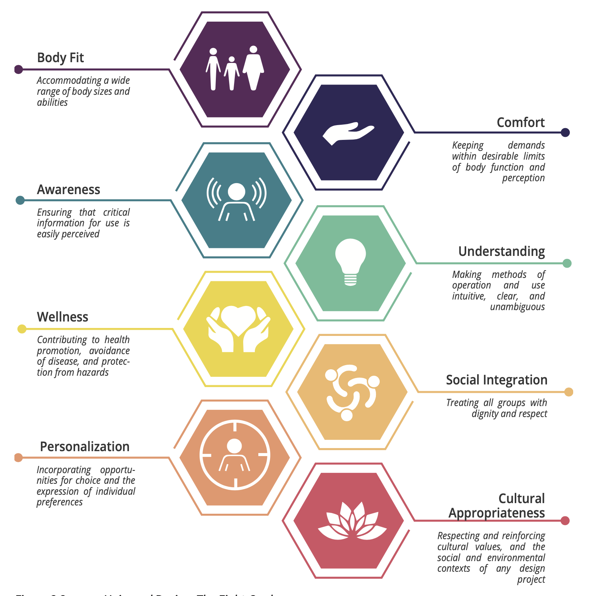
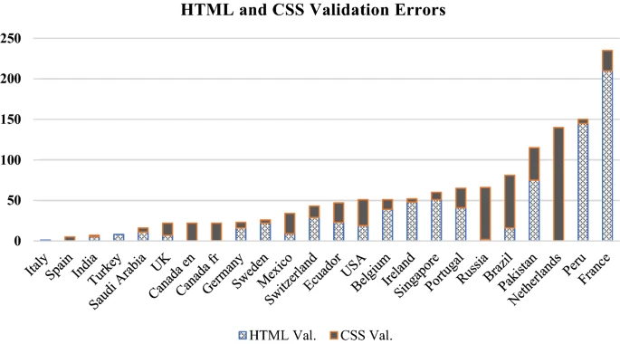

Reflection on Universal Design
What is Universal Design?
Design is everywhere. The tools we use, the technology we interact with and even the environment we walk in are all designed with certain goals and ambitions. What is not everywhere, however, is a consideration of how these designs came to be and whether they are adequate. Even when we consider design we often have a very narrow perspective to how things around us are designed. Our considerations are limited to our desires and abilities. However, a designer cannot have such narrow perspectives when they are constructing designs that will be used by people with very different abilities.
And here, we encounter a very important problem: how do we make our designs accessible to everyone, regardless of their different abilities? What principles we follow in order to be considerate of these differences? Universal Design is the design approach that emerged from these questions. It is design that aims to be accessible and easily usable by a maximal percentage of the population, regardless of differences such as age, gender and abilities. It was first developed by a group of architects, product designers, engineers and environmental design researchers led by architect Ronald Mace, focusing around seven core principles.

Guided by these seven core principles, researchers have established certain goals that universal design is aimed at achieving.
So What is the Issue?
The overarching ambition behind universal design is to create a better world, that is accessible and equitable for everyone. This is a hard problem to tackle, especially considering that most of the design around us is not exactly cohesive in their accessibility. It is not just the responsibility of designers to follow the conventions of Universal Design, but also lawmakers to ensure that our society is considerate of the different abilities of its members. There has been certain developments in this area, with the Americans with Disability Act of 1990, or the The EIDD Stockholm Declaration of 2004. Such developments have certainly made accessible design more visible, however, certainly certain elements of our environment are still not following the Universal Design ambitions we discussed earlier.
When we consider the Universal Design principles and goals in the context of software, the problem gets much more complicated and obscure. In our day and age, our lives have become much more reliant on software products, especially in terms of our daily reliance on the web. Containing countless websites, resources, and integral technologies that many people with different abilities use, the web is perhaps one of the areas where Universal Design hasn't been able to penetrate.
Problems We Experience
Accessibility problems, and lack of Universal Design considerations are visible to most of us. Universal Design doesn't just make design more accessible for people with different abilities but overall makes design more usable for everyone. The web has many problems due to the sheer amount of websites and webtools that exist. And you as a person, with no self proclaimed disabilities or accessibility issues, might have experienced such problems.
Consider the accessibility of websites on mobile devices, which is a problem that is often very easy to overlook. The goal for developers, unfortunately, are often to make their software functional, rather than accessible and easily usable for many people. And this is not completely their fault, as a society we don't often have this debate in depth. Doing so would reveal the countless pains that are experiences by people around the world, and lead to better designs.
For example, if you ever couldn't press a button while on your mobile device because the button was not large enough for your thumb, then you have encountered a very common accessibility problem. Going back to our Universal Design principles, this is a mishap in terms of "Size and Space" and is a lacking feature when it comes to our overarching goal of having a design that fits to different body sizes ("Body Fit"). This is not just experienced by people who have potato fingers, such as me, but is also more problematic when people with motor disorders or disabilities are considered. Fine motor controls are sometimes assumed by developers to be a given when extensive functionality is attempted to be crumbled into the limited screen real estate of a mobile phone. When Considering even such a minor detail causing such common problems, we can see that design is not something that can be overlooked, as the results will be noticable. Now, there are certain cases where such problems might not be a major consideration, as people are generally clever and will find workarounds around common problems. But, that is again against our Universal Design principles, such as "Tolerance for Error" or "Low Physical Effort". We cannot expect people to find workarounds to problematic designs, as doing so will take away from the experience a product provides its users with.
Such problems are all to common, and can be 'annoying' for some users and debilitating for a lot of other users. Exploring design decisions that have been made for things that we use on a daily basis reveals how design often remains a cosmetic tools rather than providing comfort and adequate support for people of all abilities. However, Universal Design, when cleverly implemented, can lead to benefits for everyone.
What Can We Do?
The ideas that are brought-forth with Universal Design are important, but there is a lack of lawmaker consideration, and tools that limit certain aspects of Universal Design to actually materialize. Thankfully, there has been a lot of improvement in this area. After ADA, Section 508 is a valuable portion of the Rehabilition Act that focuses on IT Accessibility. Web Content Accessibility Guidelines (WCAG) 2.0 is a wide range of recommendations for accessibility improvements for Web content. Tools such as AChecker Web Accessibility Checker, Wave, and Accessibility Checker are making developers' lives easier. Research on accessibility has also sped up, with aforementioned tools being used to analyze web accessibility (Macakoğlu, 2022). We are slowly moving to a world where accessibility is not an afterthought but an aspect of life that needs to be prioritized and scrutinized with modern tools and research efforts.
However, we still need to have this debate on a much more central level, as design dictates how we interact with everything. Such a core part of our live often doesn't get the attention it needs and this level of inaction perpetually creates accessibility problems, considering the rapid nature of development in software.
During the Covid-19 outbreak, for example, public health websites were crucial in providing information to the public. However, an evaluation of 25 public health website landing webpages, from 24 different countries revealed that only 3 webpages passed AChecker tool in terms of their compliance to WCAG 2.0 Guidelines (Alajarmeh, 2022) The implications of failing to uphold Universal Design principles can and do have consequences that are often devestating. Information that can mean life and death may not be accessible to everyone. Such recent examples show us that we need to think about the big picture when it comes to design.
Accessibility and Universal Design shouldn't be just left to designers and developers, but must be embraced universally by the general public. Understanding the varying nature of human abilities and needs that accompany it will influence interactions we have with each other, our environment, and our technology. So, the next time you get slightly frustrated over a stair, a door, a mobile app, or a website, think about what this design means for everyone. Think about what Universal Design stands for and how it can be implemented more ubiquitously in our lives. Good design doesn't always mean extensive research and design updates, but sometimes incremental changes that arise from daily observations. The goal should be to make life easier, and this goal is achievable with the aggregate effort of humanity.
Resources
“The 7 Principles.” Centre for Excellence in Universal Design, https://universaldesign.ie/what-is-universal-design/the-7-principles/.
“Accessibility, Diversity, and Universal Design.” Accessibility, Diversity, and Universal Design | Harmonised, https://niua.org/harmonised-guide/chapter-2.
Alajarmeh, Nancy. “Evaluating the Accessibility of Public Health Websites: An Exploratory Cross-Country Study.” Universal Access in the Information Society, vol. 21, no. 3, 2021, pp. 771–789., https://doi.org/10.1007/s10209-020-00788-7.
“The Eidd Stockholm Declaration 2004.” EIDD - DfA Europe, 25 Feb. 2021, https://dfaeurope.eu/what-is-dfa/dfa-documents/the-eidd-stockholm-declaration-2004/.
LunarLincoln. “Design for Fat Fingers.” LunarLincoln, 24 Apr. 2019, https://lunarlincoln.com/fat-fingers-designing-for-mobile-apps/.
Macakoglu, Sevval Seray, and Serhat Peker. “Web Accessibility Performance Analysis Using Web Content Accessibility Guidelines and Automated Tools: A Systematic Literature Review.” 2022 International Congress on Human-Computer Interaction, Optimization and Robotic Applications (HORA), 2022,
“What Is Universal Design?” BijouMind Interactive, http://bijoumind.com/what-is-universal-design/.